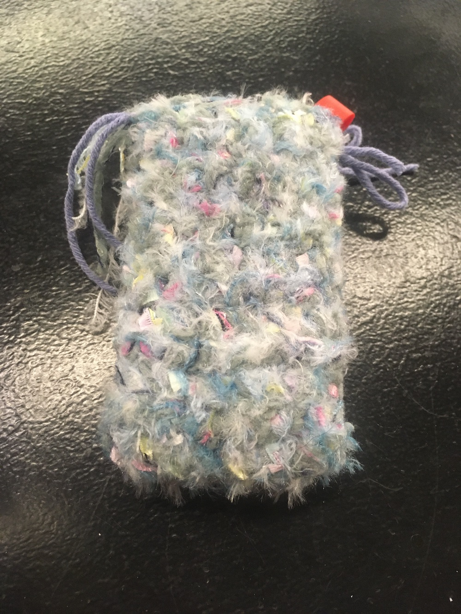
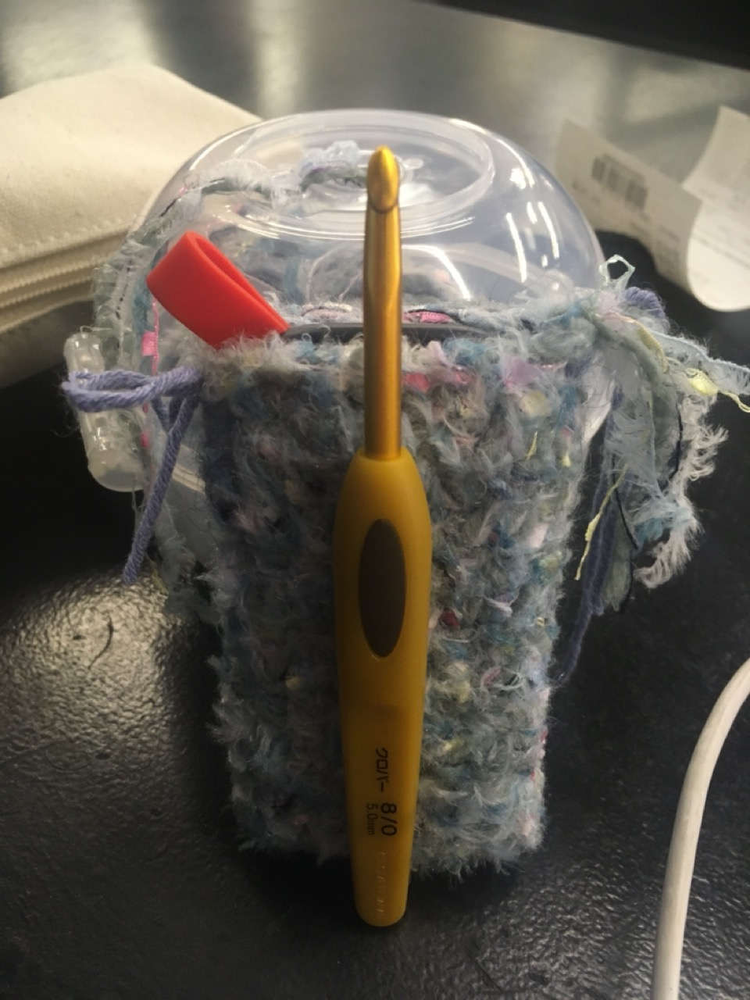
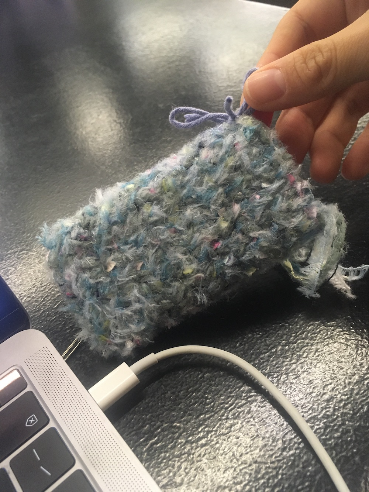

정말 멋진 실을 사서 뭐든 떠야 하는 상황이라 모든 것들의 옷을 떠주겠다는 다짐을 했다. 수첩이랄지, 에어팟이랄지, 장구채랄지, 옷이 없어도 괜찮게 살던 것들의 겉옷을 떠주기로 했다. 그 중 첫 번째로 옷이 생긴 것은 나의 외장하드다.
이 외장하드는 2년 전쯤 샀다. 외장하드가 필요해서 급히 알아봐서 산 것 치고는 꽤 마음에 드는 소지품 중에 하나다. 일단 작고 매끈하고 늘 가방에 넣어 다니기에 부담이 없다. 근데 아마 꽤 비싼 것이어서 그냥 값어치를 하는 것일 테다.
이 외장하드에는 이런 저런 것이 있다. 최초에 외장하드를 사게 만든 일의 자료들이 우선 있었고, 외장하드를 사고 난 다음 해, 그러니까 작년에도 또 이 외장하드를 요긴하게 쓸 일이 생겼다. 그리고 가방에 거의 항상 들고 다녔다. 잃어버리면 어떡하려고 그랬나 싶기도 하지만.. 가끔 가방 주머니에서 작고 매끈한 외장하드가 만져지면 어떻게 외장하드가 이렇게 작고 가벼울 수 있나 매번 생각했다. 기술이란 대단하구나 그런 생각도.. 이게 고장나면 정말 큰일인데 하는 불안한 마음과 생각해보니 이건 정말 중요하고 소중한 외장하드구나 하는 마음과..
이건 진짜 중요한 외장하드이고 옷을 만들어줄 가치가 있는 물건이구나, 좀더 소중하게 대해야 하는 물건이구나 그런 생각을 하면서 옷을 만들었다.
멋진 실을 쓰고자 하는 목적과 명분이 아주 딱 잘 맞아떨어진 셈이다.
가로 폭 만큼의 사슬코를 잡고, 짧은뜨기로 세로 길이의 2배 정도 만큼 길게 떠준 후에 반으로 접어서 옆면을 돗바늘로 막아줬다. 정말 소중하고 중요한 외장하드이지만 마무리에 공을 들이고 싶은 마음은 들지 않아서 그냥 대충 마무리했다.
이건 진짜 중요한 외장하드라는 말을 계속 하게 된다. 왜냐하면 생각하면 할수록 이건 진짜 중요하고 소중한 외장하드이기 때문이다.
별 게 저장돼 있는 건 아니지만.. 물리적인 저장소로도 중요하고 거의 온전히 내 것처럼 생각하는 시간을 함께 보냈기 때문이기도 하다. 당연히 내 것만은 아닐 테지만(세상에 그런 게 어딨어~) 내가 제일 많이 들여다 봤을 시간일 것이다.
근데 생각해보니 외장하드에 꽁꽁 숨겨두고 있다는 게 영 좋은 건 아니다. 고집스럽고 비밀스럽게 담아둔다는 건 숨기고 싶다는 건데, 사실 그럴 필요는 없다.
하여간에 부끄럽고 겸연쩍고 머쓱한 시간이 담긴 진짜 중요한 외장하드에게 멋진 옷을 입혀줄 수 있어서 뿌듯하다.
